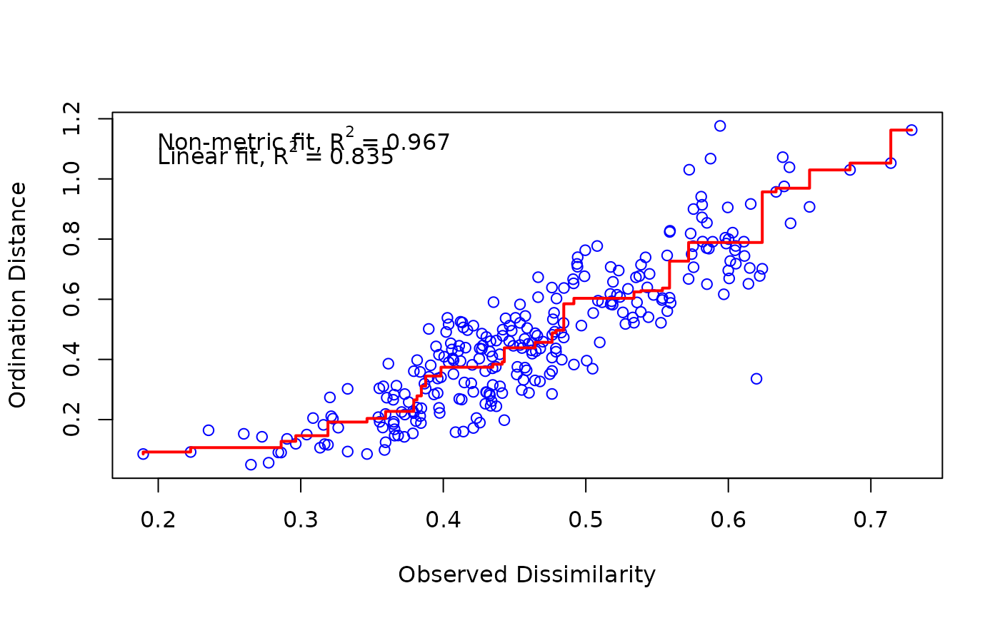

goodness.metaMDS.RdFunction goodness.metaMDS find goodness of fit measure for
points in nonmetric multidimensional scaling, and function
stressplot makes a Shepard diagram.
# S3 method for metaMDS
goodness(object, dis, ...)
# S3 method for default
stressplot(object, dis, pch, p.col = "blue", l.col = "red",
lwd = 2, ...)Dissimilarities. This should not be used with
metaMDS or monoMDS, but must be used with
isoMDS.
Plotting character for points. Default is dependent on the number of points.
Point and line colours.
Line width. For monoMDS the default is
lwd = 1 if more than two lines are drawn, and lwd = 2
otherwise.
Other parameters to functions, e.g. graphical parameters.
Function goodness.metaMDS finds a goodness of fit statistic
for observations (points). This is defined so that sum of squared
values is equal to squared stress. Large values indicate poor fit.
The absolute values of the goodness statistic depend on the
definition of the stress: isoMDS expresses
stress in percents, and therefore its goodness values are 100 times
higher than those of monoMDS which expresses the
stress as a proportion.
Function stressplot draws a Shepard diagram which is a plot
of ordination distances and monotone or linear fit line against
original dissimilarities. In addition, it displays two
correlation-like statistics on the goodness of fit in the graph.
The nonmetric fit is based on stress \(S\) and defined as \(R^2
= 1-S^2\). The “linear fit” is the squared
correlation between fitted values and ordination distances. For
monoMDS, the “linear fit” and \(R^2\)
from “stress type 2” are equal.
Both functions can be used with metaMDS,
monoMDS and isoMDS. The original
dissimilarities should not be given for monoMDS or
metaMDS results (the latter tries to reconstruct the
dissimilarities using metaMDSredist if
isoMDS was used as its engine). With
isoMDS the dissimilarities must be given. In
either case, the functions inspect that dissimilarities are
consistent with current ordination, and refuse to analyse
inconsistent dissimilarities. Function goodness.metaMDS is
generic in vegan, but you must spell its name completely with
isoMDS which has no class.
Function goodness returns a vector of values. Function
stressplot returns invisibly an object with items for
original dissimilarities, ordination distances and fitted values.
metaMDS, monoMDS,
isoMDS, Shepard. Similar
diagrams for eigenvector ordinations can be drawn with
stressplot.wcmdscale, stressplot.cca,
stressplot.rda and stressplot.capscale.
data(varespec)
mod <- metaMDS(varespec)
#> Square root transformation
#> Wisconsin double standardization
#> Run 0 stress 0.1843196
#> Run 1 stress 0.2079056
#> Run 2 stress 0.1825658
#> ... New best solution
#> ... Procrustes: rmse 0.04162664 max resid 0.1518062
#> Run 3 stress 0.23256
#> Run 4 stress 0.2100656
#> Run 5 stress 0.195049
#> Run 6 stress 0.2048307
#> Run 7 stress 0.2077995
#> Run 8 stress 0.1843196
#> Run 9 stress 0.2143515
#> Run 10 stress 0.196245
#> Run 11 stress 0.2112257
#> Run 12 stress 0.2028828
#> Run 13 stress 0.1982376
#> Run 14 stress 0.2104573
#> Run 15 stress 0.2419296
#> Run 16 stress 0.1948413
#> Run 17 stress 0.2561117
#> Run 18 stress 0.1964718
#> Run 19 stress 0.2261047
#> Run 20 stress 0.2109612
#> *** No convergence -- monoMDS stopping criteria:
#> 17: stress ratio > sratmax
#> 3: scale factor of the gradient < sfgrmin
stressplot(mod)

gof <- goodness(mod)
gof
#> [1] 0.02984513 0.03513715 0.04189203 0.04598234 0.04003136 0.03441449
#> [7] 0.03294878 0.03050088 0.03060750 0.02994082 0.03526315 0.02621422
#> [13] 0.03831044 0.02980896 0.03369593 0.02225888 0.03561581 0.03505246
#> [19] 0.06577475 0.03268386 0.03503113 0.02956637 0.05168013 0.04601986
plot(mod, display = "sites", type = "n")
points(mod, display = "sites", cex = 2*gof/mean(gof))